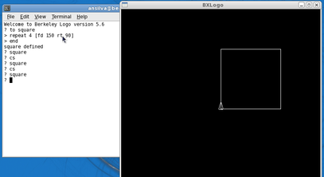
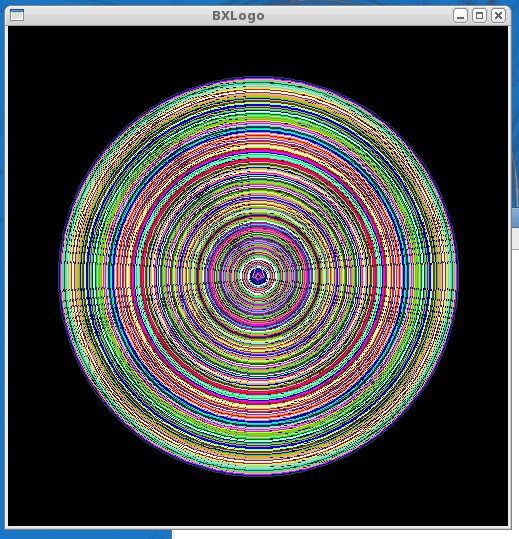

...making Linux just a little more fun!
Anderson Silva [afsilva at gmail.com]
The line:
Where 90 and 270 is how many degrees the turtle should turn given the right or left command.
Should probably read:
Where 90 and 270 are how many degrees the turtle should turn given the right or left command.
Apologies for not catching that earlier.
-- http://www.the-silvas.com
[ Thread continues here (7 messages/4.82kB) ]
Jimmy O'Regan [joregan at gmail.com]
I'll be in San Francisco for a couple of days next month (Google Mentor Summit). Will anyone else be around?
[ Thread continues here (3 messages/1.69kB) ]
Mulyadi Santosa [mulyadi.santosa at gmail.com]
Hi all
Accidentally I click the back page of LG #166 (http://linuxgazette.net/166/lg_backpage.html). There, it is written
"special thanks are due to Mulyadi Santosa, who brought Pete Trbovich's "Doomed to Obscurity" trenchantly funny cartoons to our attention"
I checked my Sent mail folder of Gmail and I found no such message
indicating I told about that cartoon. perhaps Kat was mistakenly
giving credit to me?  I just don't want to steal someone else's
credit
I just don't want to steal someone else's
credit
Thanks in advance for your attention...
-- regards,
[ Thread continues here (5 messages/4.35kB) ]
[zarko at googlux.com]
Hi all
Would like to introduce myself and this site, that I hope will become popular place for Linux Gazette translations on Serbia language.
Most of my work evolves around Solaris Administration, but sometimes I also need to do Linux work and Gazette is great source of helpful tips.
Despite my extremely busy professional (and personal) schedule, I'll try to find time for translation, but I also encourage people from former Yugoslavia to contact me and submit their translations. They all know that there is no much difference between languages like Serbian, Croatian, Bosnian, etc, so I am willing to publish all translation (both in Cyrillic or Latin alphabet) .
Cheers Zarko http://www.googlux.com/linuxgazette/
[ Thread continues here (2 messages/2.43kB) ]
J. Bakshi [j.bakshi at unlimitedmail.org]
Hello list,
Hope you all are well. It is nearly 2 weeks I am working with iptables configuration and stuck poorly at a very interesting point. Among several others feature of my firewall, one I like to implement is limit_total_connection_of_a_service. There is already rate-limiter like a user can't get more than 2 ftp connection per min from the same source IP. I have used hashlimit for this. It can also be extended to restrict *all total* 2 connection per min .
- But what to do to restrict all total 2 ftp connection from a particular source ?
- And to restrict all together 5 ftp connection to the server ?
Could any one suggest a iptables configuration or iptables module to achieve these two objectives ? Thanks
PS: Please CC me.
[ Thread continues here (2 messages/2.09kB) ]
Ben Okopnik [ben at linuxgazette.net]
----- Forwarded message from brahm sah <itsbds@yahoo.co.in> -----
Date: Thu, 17 Sep 2009 11:41:36 +0530 (IST) From: brahm sah <itsbds@yahoo.co.in> Subject: Regarding How can Define congestion windows in Fedora To: editor@linuxgazette.netRespected Sir.
I am Mr. Brahm Deo Sah, I am Master of Technology (Computer Science) student in M.G.M,'s College of Engnieering Nanded (Maharashtra), India. I have selected one ═IEEE Transaction papers ═"Accumulation based congestion control" as my dessertation topic. It would be really great if you can help me out in implementation of this paper. i have some proble to define the═
═1.Congestion ═ windows Size 2.algorithms. in NS-2 with Linux(Fedora)
Thanking you.
Mr. Brahm Deo sah India
Britto I [britto_can at yahoo.com]
Folks:
I would like to have some configuration advice from you guys for apache.
I have Apache 2.2.8 running in RHEL box.
I have multiple webapps running in tomcat and connected through apache via ajp proxy.
Now we have the Rewrite rules..like
RewriteRule ^/Context1$ /Context1/ [R] RewriteRule ^/Context2$ /Context2/ [R] RewriteRule ^/$ /DefaultContext/ [R]
Here Context1,Context2, DefaultContext all are different webapps hosted by tomcat.
When somebody calls for www.mysite.com it goes to www.mysite.com/DefaultContext/ now.
How can I disable or hide the Defaultcontext being displayed in the URL.
So that if there is some hit at www.mysite.com/DefaultContext/DoAction it should display the user www.mysite.com/DoAction
Any advice guys ..
Thanks & regards, Britto
[ Thread continues here (7 messages/3.38kB) ]
Mulyadi Santosa [mulyadi.santosa at gmail.com]
Hi Gang...
Today I try to setup a server using Ubuntu 8.04. This PC has 3 hard disks and I plan to bond them as RAID 5 device.
To achieve that, during setup stage, I create 6 partitions. 3 of them are clustered as RAID 5 and mounted as /, while the rest are also made as RAID 5 device and formatted as swap.
There was a warning telling me that those new RAID devices won't be recognized until I reboot the machine. I hit the Continue button and proceed with package installation etc. Everything seems OK and finally the installer ask me to remove the DVD and reboot.
Here comes the trouble, the freshly installed Ubuntu won't boot. My partner told me that it could due to unfinished RAID synchronization. So again I boot the Ubuntu DVD, this time I pick "rescue mode" and go into shell (making /dev/md0 the root fs). In this shell, I did "cat /proc/mdstat" and found out the sync is still on the way. So I wait until it hit 100% and reboot the machine again. But still, no luck.
Thus, I wonder, is this because I pick RAID 5 device as root fs? Is this a known bug (or limitation of GRUB)? I came to this conclusion after reading http://advosys.ca/viewpoints/2007/04/setting-up-software-raid-in-ubuntu-server/ (the 8th comment).
Advices are greatly appreciated. Thank you in advance for your attention .....
-- regards,
[ Thread continues here (7 messages/7.58kB) ]
Rennie Johnson [renniejohnson at adelphia.net]
Oh great Linux Gurus:
I read your article on VMWare about running Linux apps in windows.
[[[ He probably means Jimmy O'Regan's article, here: http://linuxgazette.net/106/oregan.html -- Kat ]]]
I'm writing a monster OpenGL application on Windows. I want to be able to call a Linux shell application from within my program, is it is not available on Windows. I use Visual C++ 2008.net.
Any ideas?
Best regards,
Rennie Johnson
[ Thread continues here (4 messages/5.42kB) ]
Mulyadi Santosa [mulyadi.santosa at gmail.com]
Hi Gang...
Googling here and there, I found very little web sites that talks about recommended Linux-compatible DVD RW drive. So, I try my luck here...perhaps you have recommendation? Preferrably below US$ 100? FYI I am currently using Fedora 9 and kernel 2.6.30.4
Thanks in advance for your help and attention...
-- regards,
[ Thread continues here (3 messages/2.60kB) ]
Suramya Tomar [security at suramya.com]
Hi Jimmy,
> One of our users is complaining that our transliterator doesn't work; > the few of us who have tested it all find that it works for us. Now, > he says it only works because our locales are wrong(?). I'm just > wondering if anyone other than him can get the incorrect result: i.e., > that 'ा' fails to transliterate to 'ા' -- I reproduced the same test > using standard tools belo, because they do the same thing as our > transliterator.
Just saw this email, so tried it out on my system. This is what I got:
suramya@Wyrm:/usr/lib/locale$ echo $LANG en_IE.UTF-8 suramya@Wyrm:/usr/lib/locale$ echo राम|tr 'राम' 'રામ' રામ suramya@Wyrm:/usr/lib/locale$ echo राम|sed -e 's/र/ર/g'|sed -e 's/ा/ા/g' |sed -e 's/म/મ/g' રામ suramya@Wyrm:/usr/lib/locale$ echo राम|perl /home/suramya/Temp/test.pl રામ suramya@Wyrm:/usr/lib/locale$
It seems to be working fine for me... Hope this helps.
- Suramya
[ Thread continues here (3 messages/3.34kB) ]
[ In reference to "2-Cent Tips" in LG#166 ]
Ben Okopnik [ben at linuxgazette.net]
----- Forwarded message from Rob Reid -----
Date: Thu, 3 Sep 2009 22:04:21 -0400 From: Rob Reid <xxxxx@nrao.edu> To: ben@linuxgazette.net Subject: tkb: Re: 2-cent Tip: Conditional pipesHi Ben,
I'm glad to see the nitty-gritty of shells and terminals being dealt with in Linux Gazette. One thing that might have been unclear to the reader is that the
LESS=FX less
syntax is (ba|z)sh code for "run less with the LESS variable set to FX for this time only". As you probably know, you could alternatively put
export LESS="-FRX" # The R is for handling color.
in your ~/.profile to have less nicely customized everytime you run it, with less typing.
-- Rob Reid http://www.cv.nrao.edu/~rreid/ Assistant Scientist at the National Radio Astronomy Observatory Isn't it a bit unnerving that doctors call what they do "practice?" - Jack Handey
[ Thread continues here (2 messages/3.18kB) ]
[ In reference to "Internet Radio Router" in LG#166 ]
Mulyadi Santosa [mulyadi.santosa at gmail.com]
This article reminds me to the day I made my first crude webmail using
perl CGI. Not too good, but also not so bad considering the fact "It
Just Works" and I made it using Perl while most of my friends would
prefer using PHP to do such thing
Bash scripting for CGI....ouch that's just great! and old sk00lz too!
Thanks Mr Ziemann for sharing your works....
-- regards,
[ Thread continues here (21 messages/23.00kB) ]
[ In reference to "Linux Layer 8 Security" in LG#166 ]
Thomas Johnson [tommyj27 at gmail.com]
There is a typo in one of the Matahari URLs in this article. The URL points at sourceforce.net, rather than sourceforge.net.
[ Thread continues here (3 messages/1.24kB) ]
[ In reference to "Software Development on the Nokia Internet Tablets" in LG#165 ]
Kapil Hari Paranjape [kapil at imsc.res.in]
Hello,
Thanks for a nice article explaining how to setup and use Scratchbox for developing on the Nokia tablets.
Since the N900 has just be announced by Nokia you can expect a lot of links to this issue of LG in a short while!
Regards,
Kapil. --
[ In reference to "Mailbag" in LG#166 ]
Jimmy O'Regan [joregan at gmail.com]
We got to the bottom of the transliteration problem: on Vineet's system, there was a flaw in the locales -- matras were defined as 'punct' instead of 'alpha'.
2009/8/6 Jimmy O'Regan <joregan@gmail.com>:
> 2009/8/6 Vineet Chaitanya <vc@iiit.ac.in>: >> All the three tests suggested by you passed successfully (using unmodified >> en_IE.UTF-8 locale). >> >> >> But if I modify "i18n" file so that "matraas" are declared as "alpha" >> instead of "punct" then lt-proc -t also works correctly. >> >> In any case I would like to have a look at your "i18n" file and would >> like to know the reason why it differs from the usual one. > > > in 'i18n', I guess this comment from 'LC_CTYPE' agrees with you: > `` > % - All Matras of Indic and Sinhala are moved from punct to alpha class/ > % - Added Unicode 5.1 charctares of Indic scripts/ > % DEVANAGARI/ > <U0901>..<U0939>;<U093C>..<U094D>;/ > <U0950>..<U0954>;<U0958>..<U0961>;/ > <U0962>;<U0963>;<U0972>;<U097B>..<U097F>;/ > '' > > So yes, the matras are in the 'alpha' class on my system, not 'punct'. > > $ apt-cache show locales > Package: locales > Priority: required > Section: libs > Installed-Size: 8796 > Maintainer: Martin Pitt <martin.pitt@ubuntu.com> > Architecture: all > Source: langpack-locales > Version: 2.9+cvs20090214-7 >
[ In reference to "GNOME and Red Hat Linux Eleven Years Ago" in LG#165 ]
Jakub Safar [mail at jakubsafar.cz]
Hi,
thank you for the article about GNOMEs history. Looking back made me happy, nevertheless, I doubt that ... "GNOME development was announced in August 1977" ;-)
http://linuxgazette.net/165/laycock.html
Jakub
[ Thread continues here (3 messages/3.03kB) ]
[ In reference to "Keymap Blues in Ubuntu's Text Console" in LG#157 ]
eric stockman [stockman.eric at gmail.com]
On my intrepid ibex 8.10 system the keymaps are in /usr/share/rdesktop/keymaps/
[ Thread continues here (2 messages/1.02kB) ]
[ In reference to "/lg_tips.html" in LG#issue75 ]
Jim Cox [jim.cox at idt.net]
Another option, though I'm not sure if it fits the OP's constraint of "plain shell methods", is stat with a custom format:
prompt$ stat -c %y /tmp/teetime.log 2009-08-31 09:30:11.000000000 -0400
I stumbled across this while looking for filesizes in scripts, seemed a bit cleaner v. cut against ls output:
prompt$ stat -c %s /tmp/teetime.log 7560497
[ Thread continues here (4 messages/2.90kB) ]
Lew Pitcher [lew.pitcher at digitalfreehold.ca]
Hi guys,
On September 21, 2009 01:08:09 Mulyadi Santosa wrote: [snip]
> Don't worry, you don't need to use GUI automation tool such as dogtail > for doing so. Simply use gnome-power-cmd.sh command to do that. Note: > make sure atd daemon is running first. Then do: > $ at now + 10 minutes > at> gnome-power-cmd.sh suspend > at> (press Ctrl-D)[snip]
This post reminded me that at(1) reads it's commands from stdin. Not that I had forgotten that fact, but that I usually avoid it. I rarely need to enter multi-line commands into at-scripts, and avoid having to cope with at's stdin by using the echo command.
For instance, I would have written the above at(1) invocation as
echo gnome-power-cmd.sh suspend | at now + 10 minutes
Trivial, I know. That's why I called it a "1 cent tip"
-- Lew Pitcher Master Codewright & JOAT-in-training | Registered Linux User #112576 http://pitcher.digitalfreehold.ca/ | GPG public key available by request ---------- Slackware - Because I know what I'm doing. ------
[ Thread continues here (2 messages/2.71kB) ]
Oscar Laycock [oscar_laycock at yahoo.co.uk]
I recently came across some old notes listing the books I read when starting to use Linux.
At first, I wasn't sure what Free Software was, so I read the following:
- Free as in Freedom, Richard Stallman's Crusade for Free Software, 2002 http://oreilly.com/openbook/freedom/
- Open Sources: Voices from the Open Source Revolution, 1999 http://oreilly.com/catalog/opensources/book/toc.html I especially liked the chapter 'Freeing the Source - The Story of Mozilla'
- The Cathedral and the Bazaar, Eric S. Raymond http://www.catb.org/~esr/writings/cathedral-bazaar/ I particularly enjoyed reading the section 'A Brief History of Hackerdom'
- http://www.gnu.org/philosophy/ This has various articles about free software
I also read these Unix books and articles:
- The Art of Unix Programming, Eric S. Raymond http://www.catb.org/esr/writings/taoup/html/
- The UNIXHATERS Handbook http://web.mit.edu/~simsong/www/ugh.pdf This reminded me that Unix is not the only way of doing things.
- Why Pascal is Not My Favorite Programming Language, Brian W. Kernighan, 1981 http://www.cs.virginia.edu/~evans/cs655-S00/readings/bwk-on-pascal.html
I must have read almost every entry in 'The Jargon File' at 'http://www.catb.org/jargon/'.
I always wanted to know about networking, so I read 'The Linux Network Administrator's Guide' on the Linux Documentation projects website, 'http://tldp.org/guides.html'. On the same site I found two old books: 'The Linux Programmer's Guide' and 'The Linux Kernel' by David Rusling. I know a bit of C which helped. I also went through most of the series of 'Anatomy of...' articles at 'http://www.ibm.com/developerworks/linux/'. I even browsed through the 'Intel 64 and IA-32 Architectures Software Developer's Manuals' at 'http://www.intel.com/products/processor/manuals/'.
I enjoyed the 'The Bastard Operator From Hell' articles. You can google for them. There are some at 'http://members.iinet.net.au/~bofh/'. Also try searching for lists of how 'You know you've been hacking too long when...'. I also liked the 'Real Programmers Don't Use Pascal' and 'The Story of Mel' posts. You can find discussions of them on wikipedia.
I learnt about Linux distro's from reading the Distrowatch Weekly at 'http://distrowatch.com/'.
[ ... ]
[ Thread continues here (1 message/3.52kB) ]
Mulyadi Santosa [mulyadi.santosa at gmail.com]
In some cases, you might want to hibernate or suspend your Linux system solely from command line i.e because you want to schedule it via "at".
Don't worry, you don't need to use GUI automation tool such as dogtail for doing so. Simply use gnome-power-cmd.sh command to do that. Note: make sure atd daemon is running first. Then do:
$ at now + 10 minutes at> gnome-power-cmd.sh suspend at> (press Ctrl-D)will do suspend-to-RAM 10 minutes from now. Replace "suspend" with "hibernate", "shutdown" or "reboot" to do the respective actions.
-- regards,
By Deividson Luiz Okopnik and Howard Dyckoff

|
Contents: |
Please submit your News Bytes items in plain text; other formats may be rejected without reading. [You have been warned!] A one- or two-paragraph summary plus a URL has a much higher chance of being published than an entire press release. Submit items to bytes@linuxgazette.net. Deividson can also be reached via twitter.
 Red Hat Introduces DeltaCloud Project
Red Hat Introduces DeltaCloud Project Redhat engineers have initiated the DeltaCloud project "To enable an ecosystem of developers, tools, and applications which can interoperate across the public and private clouds".
Currently, each Infrastructure-as-a-Service (IaaS) cloud has a unique API that developers and ISVs write to in order to consume the cloud service. The DeltaCloud effort hopes to create a common, REST-based API which developers can write to once and manage anywhere and everywhere. This requires a middleware layer with drivers that map APIs to all public clouds like EC2, and private virtualized clouds based on VMWare and Red Hat Enterprise Linux with integrated KVM. The long term goal is for the middleware API to be test driven with a self-service web console, which will be another part of the DeltaCloud effort.
Among its goals, DeltaCloud aims to give developers:
One level up, DeltaCloud Portal will provide a web UI in front of the DeltaCloud API to:
DeltaCloud API and Portal are free and open source (LGPL, GPL). For more info, see: http://deltacloud.org.
Red Hat, JBoss Innovators of the Year Announced At the co-located Red Hat Summit and JBoss World in Chicago in September, Red Hat gave out their 2009 Innovator of the Year Awards which features major customers and how they put Red Hat and JBoss products and technologies to use.
In its third year, theInnovation Awards highlighted six category finalists for 2009:
Voting was open to the entire open source and Red Hat community to select the two overall Innovation Award winners - one Red Hat and one JBoss winner. This year, Red Hat Innovator of the Year Award went to Whole Foods Market. The company was selected for its use of Red Hat Satellite that resulted in reduced costs, reallocated resources and the ability of the Whole Foods IT department to focus on strategic business initiatives.
The JBoss Innovator of the Year went to Ecommerce + Vizuri for developing Imperia, a data center Web services hosting platform that can reduce operational costs and increase customer reliability using Red Hat, JBoss, Hyperic, and EnterpriseDB solutions.
Oracle Re-affirms Sun and Solaris Commitment Oracle tried to reassure its new-found Sun customers by taking out an ad on the front page of the Wall Street Journal in mid-September.
The ad had 4 simple bullet-points addressed to Sun Customers, many of whom are in the financial sector of the economy, and a short quote from Larry Ellison saying he looked forward to competing with IBM. The bullets said the Oracle intends to:
Oracle made good on the last point when it announced its improved Exadata V2 DB machine. (See article below.) The ad did not mention Java or the MySQL database, both of which Oracle now owns.
Oracle Unveils Hefty Exadata Version 2 - on Sun HardwareThe OLTP Database Machine was unveiled in September by Oracle Chief Executive Officer Larry Ellison and Sun Executive Vice President John Fowler. The Exadata Database Machine Version 2, made by Sun and Oracle, is said to be the world's fastest machine for both data warehousing and online transaction processing (OLTP).
Built using industry standard hardware components plus FlashFire technology from Sun, Oracle Database 11g Release 2 and Oracle Exadata Storage Server Software Release 11.2, the Sun Oracle Database Machine V2 is twice as fast as Version 1 for data warehousing. The Sun Oracle Database Machine goes beyond data warehousing applications with the addition of the huge Exadata Smart Flash Cache based on Sun FlashFire technology to deliver extreme performance and scalability for OLTP.
Bottom line: with the Sun Oracle Database Machine, customers can store more than 10x the amount of data and search data more than 10x faster without any changes to applications.
"Exadata Version 1 was the world's fastest machine for data warehousing applications," said Oracle CEO Larry Ellison, with characteristically limited modesty. "Exadata Version 2 is twice as fast as Exadata V1 for data warehousing, and it's the only database machine that runs OLTP applications. Exadata V2 runs virtually all database applications much faster and less expensively than any other computer in the world." Ellison compared ExaData 2 to Teradata systems and high-end IBM 595 Power RISC machines. "IBM has nothing like this," Ellison said after noting that only IBM mirrors disks while Exadata 2 is fully fault tolerant with redundant hardware.
Ellison also noted the modular ExaData 2 can be installed and ready in a single day. "It will be working by evening ... just load and run," Ellison said.
Better Hardware Specs from Sun:
Software Optimization from Oracle:
Exadata Version 2 is available in four models: full rack (8 database servers and 14 storage servers), half-rack (4 database servers and 7 storage servers), quarter-rack (2 database servers and 3 storage servers) and a basic system (1 database server and 1 storage server). All four Exadata configurations are available immediately.
ARM Announces 2GHz Cortex-A9 Dual Core Processor Designs Gunning to displace Intel's netbook-dominant "Atom" processor, ARM announced development of dual Cortex-A9 MPCore hard macro implementations for the 40nm-G process developed with its partner, TSMC (Taiwan Semiconductor Manufacturing Co.). Silicon manufacturers now have a rapid route to silicon for high-performance, low-power Cortex-A9 processor-based devices. The speed-optimized hard macro implementation will enable devices to operate at frequencies greater than 2GHz with a power efficiency up to 8x greater than Intel's current Atom offerings.
The dual core hard macro implementations use advanced techniques to increase performance while lowering overall power consumption. Running at 2-GHz, the Cortex-A9 delivers about 10,000 MIPS with a power demand of about 2 watts. The low power design runs at 800 Mhz, consumes a half watt of power and delivers 4000 MIPS. In many thermally-constrained applications such as set-top boxes, DTVs, printers and netbooks, energy efficiency is of paramount importance. The Cortex-A9 can deliver a peak performance of 4000 DMIPS while consuming less than 250mW per CPU core. ARM announced it was developing quad-core and eight-core Cortex-A9 processor designs. In separate news, ARM also joined the Linux Foundation in September. The Cortex-A9 speed-optimized and power-optimized implementations are available for license now with delivery in the fourth quarter of 2009. ARM' 40G physical IP platform is also available at http://designstart.arm.com.
More information on ARM is available at http://www.arm.com.
Linpus' Launches Linpus Linux Lite 1.2 at OSIM World At OSIM World in mid-September, Linpus Technologies, Inc. released its new version of Linpus Linux Lite, its flagship netbook and nettop product aimed to improve a user' online experience.
This new version of Linpus Linux Lite, through its LiveDesktop application, improves the user experience by gathering important information in one place. LiveDesktop has six modules with thumbnail and text summaries, and an option for large previews. The social networking module allows access into Twitter, Flickr, Myspace and LastFM accounts. There are two modules for email - one for desktop mail and one that delivers mail from Web mail accounts. Additionally, there are modules for most recent websites and opened files -and a module for favorite programs or shortcuts.
LiveDesktop has also been designed so that each module has an extra 3 or 4 objects, found by tapping the arrow at the side, meaning you can for example, actually quickly see six recent Web sites rather than just three.
Linpus Linux Lite also has a number of key improvements:
Oracle Enhances VM Template Builder, Oracle Enterprise Linux JeOS In August, Oracle announced Oracle VM Template Builder, an open source graphical utility that makes it easy to use Oracle Enterprise Linux "Just enough OS" (JeOS) and scripts for developing pre-packaged virtual machines for Oracle VM.
Oracle VM Template Builder uses "JeOS" to facilitate building an operating system instance with only the absolute minimum packages needed for an Oracle VM Template, helping to reduce the disk footprint by up to 2GB per guest virtual machine and to improve security and reliability.
Oracle Enterprise Linux JeOS is backed by 24x7, enterprise-class support and has been tailored specifically to facilitate the creation of Oracle VM Templates for production enterprise use.
Oracle VM Templates are virtual machines with pre-installed and pre-configured enterprise software that can be used by ISVs or end-users to package and distribute their applications. Oracle VM Templates simplify application deployments, reduce end-user costs and can make ISV software distribution more profitable.
This also allows end-users and ISVs the option to develop their Oracle VM Templates by using JeOS-based scripts directly or via the graphical Oracle VM Template Builder.
The graphical Oracle VM Template Builder utility is based on the core technology of Oracle's small footprint Oracle Enterprise Linux JeOS operating system image that is designed specifically for Oracle VM Template creation and build-process integration. Oracle offers this combination of enterprise class operating system and virtualization software for free download and free distribution. (O-VM is based on Xen virtualization technology.)
Oracle VM supports both Oracle and non-Oracle applications. Oracle VM Templates are available today for Oracle' Siebel CRM, Oracle Database, Oracle Enterprise Manager, Oracle Fusion Middleware, and more. See a complete list of templates at: .
Oracle VM Template Builder is distributed as software packages via the Oracle Unbreakable Linux Network (ULN) and Oracle Technology Network.
More informaton on Oracle virtualization offerings are available here:
http://www.oracle.com/virtualization.
More info on Oracle's JEOS Linux is available here:
http://www.oracle.com/technology/software/products/virtualization/vm_jeos.html.
Toshiba Links vPRO Technology With TCG Self-Encrypting Drives Toshiba's Storage Device Division (SDD), a division of Toshiba America Information Systems, Inc., showcased its Trusted Computing Group (TCG) Opal-compliant Self Encrypting Drives (SEDs) in a demonstration of secure access using the Intel's vPro technology during the Intel Developer Forum (IDF) in San Francisco during September. As corporate governance requirements, government regulations and other industry mandates for stronger data protection increase, TCG Opal-compliant SEDs will become an increasingly important component in the data protection equation. Unlike earlier SED offerings, TCG Opal-compliant SEDs provide standards-based protocols to facilitate widespread adoption by disk drive vendors, security management software providers, system integrators and security-conscious end users.
The IDF demonstration was the first time SEDs were paired with Intel vPro technology to securely deliver down-the-wire access authentication. Management console applications can use Intel vPro technology to securely authenticate and access TCG Opal-compliant SEDs on remote PCs, even if the computer is powered off. This capability allows remote perform software updates, security audits and maintenance tasks in an enterprise domain.
SEDs greatly enhance the data security on any PC, especially laptops, which are at greater risk of being lost or stolen. The TCG Opal-specification provides a framework for delivering centrally managed encryption solutions. TCG Opal-compliant SEDS offer the benefits of stronger security through industry standardization of security protocols on the hard drive, providing easier use and lower cost of ownership with decreased management complexity. Should a PC be lost or stolen, an IT administrator can take action to remotely disable the PC and instantly erase the encrypted data and applications on the SED, through Intel Anti-Theft Technology, which is available on some Intel vPro technology-enabled notebooks. Intel vPro technology enhances the manageability of PCs equipped with Opal-compliant SEDs by providing the mechanism through which IT administrators can authenticate and remotely access the unattended PC.
Software updates and other administrative tasks can then be performed from virtually anywhere in the world, using a secure out-of-band communications channel to access and manage PCs that incorporate TCG Opal-compliant SEDs.
Toshiba plans to commercially introduce TCG Opal-compliant SEDs in 2010. For more information on Toshiba' line of mobile HDDs, please visit http://www.toshibastorage.com.
Danube Releases ScrumWorks Pro 4, Enterprise-ready Scrum Tool Danube Technologies, a leader in project management tools and training for the Scrum methodology, announced in September that ScrumWorks Pro 4, the latest release of the only enterprise-capable tool designed exclusively to reinforce the principles of the Scrum framework, was now available for purchase and upgrade. New features added to this release were driven by customer feedback and address the growing demands of enterprise customers. With release 4, large groups organized to meet complex development needs now have a flexible system to model features and milestones across multiple development groups.
"As the popularity of Scrum continues to grow, so has the demand for a project management tool that is sophisticated enough to scale for the largest, most complex Scrum development environments," said Victor Szalvay, Danube CTO and the Product Owner of ScrumWorks Pro. "This latest release gives users a powerful combination of functionality and flexibility to effectively model features and milestones across multiple related development groups."
New to ScrumWorks Pro 4:
"ScrumWorks Pro has always been driven by customer feedback," said Szalvay. "For large-scale Scrum deployments, release 4 will help coordinate multiple related product backlogs, all of which can work toward common release dates and feature goals."
ScrumWorks Pro 4 is currently available and can be purchased directly from Danube. Pricing is offered through an on-site, per-seat subscription license that starts at $289 per-user, per-year, or less than $25 per-user, per-month, as well as an on-site, per-seat fully paid license for $500. For more information on ScrumWorks Pro, visit http://www.danube.com/scrumworks/pro.
VMware vCenter 4 Drives Business Agility At VMworld 2009, VMware unveiled a new management model for IT, with the introduction of the VMware vCenter Product Family, a set of solutions for policy-based, service-driven management and business agility. VMware vCenter Product Family builds on the capabilities of VMware vSphere 4 to simplify management, reduce operating costs, and deliver flexible IT services.
Features of vCenter include:
For more information about virtualization management solutions from VMware and the VMware vCenter Product Family, http://www.vmware.com/products/vcenter/.
Talkback: Discuss this article with The Answer Gang
![[BIO]](../gx/authors/dokopnik.jpg)
Deividson was born in União da Vitória, PR, Brazil, on 14/04/1984. He became interested in computing when he was still a kid, and started to code when he was 12 years old. He is a graduate in Information Systems and is finishing his specialization in Networks and Web Development. He codes in several languages, including C/C++/C#, PHP, Visual Basic, Object Pascal and others.
Deividson works in Porto União's Town Hall as a Computer Technician, and specializes in Web and Desktop system development, and Database/Network Maintenance.
Howard Dyckoff is a long term IT professional with primary experience at
Fortune 100 and 200 firms. Before his IT career, he worked for Aviation
Week and Space Technology magazine and before that used to edit SkyCom, a
newsletter for astronomers and rocketeers. He hails from the Republic of
Brooklyn [and Polytechnic Institute] and now, after several trips to
Himalayan mountain tops, resides in the SF Bay Area with a large book
collection and several pet rocks.
Howard maintains the Technology-Events blog at
blogspot.com from which he contributes the Events listing for Linux
Gazette. Visit the blog to preview some of the next month's NewsBytes
Events.

By Silas Brown
Here are some pointers that might help learners of Chinese to communicate with their Chinese friends using the QQ protocol which is popular in China.
mv .gtkrc g0 ; (sleep 5;mv g0 .gtkrc) & qq
QQ 2008 (with voice chat) can be set up in WINE as follows, but it is unstable.
mkdir qq && cd qq && wget http://dl_dir.qq.com/qqfile/qq/QQ2008stablehij/QQ2008.exe && HOME="$(pwd)" LANG=zh_CN.gb18030 wine QQ2008.exe
then click the button marked with an (I), then click the first radio box, then Next, then Next, then wait for installation, then Finish. The "what's new" file will appear in Notepad, and QQ will launch; you may now fill in your number and password (and choose to remember password).
You then need to close QQ and do this:
killall TXPlatform.exe QQ.exe explorer.exe winedevice.exe rundll32.exe services.exe rm .wine/drive_c/Program\ Files/Tencent/QQ/TXPlatform.exe
Then run QQ with
HOME="$(pwd)" LANG=zh_CN.gb18030 \ WINEDLLOVERRIDES="mfc42,msvcp60,riched20,riched32=n,b;mmdevapi=" \ wine .wine/drive_c/Program\ Files/Tencent/QQ/QQ.exe
(adapted from the Chinese-language thread at http://www.linuxdiyf.com/bbs/thread-109610-1-1.html, with some experimentation to improve stability)
Most characters should be displayed if your system has the zh_CN.gb18030 locale and some Chinese TTF fonts, although some menus may not display.
Voice chat works for me on Ubuntu Hardy's WINE package (version 1.0.0-1ubuntu4~hardy1). Newer WINE packages (1.1.0, 1.1.24) get an assertion failure about (elem)->type == SND_MIXER_ELEM_SIMPLE in the ALSA code, or if you use winecfg to set OSS audio then sound works only one way.
Some Chinese people will tell you that there exists an English version of QQ. However, that was released in 2005 and uses a version of the protocol that QQ no longer supports. There is a 2008 English version of their simpler "Tencent Messenger" product, but I was not able to get that to work with WINE.
With thanks to Jessy Li for some translation help.
Talkback: Discuss this article with The Answer Gang
![[BIO]](../gx/authors/brownss.jpg)
Silas Brown is a legally blind computer scientist based in Cambridge UK. He has been using heavily-customised versions of Debian Linux since 1999.
The SecureWorld Expo series of regional conferences has become an annual event in many parts of the US. SecureWorld aims to foster communication between security professionals and technology leaders on issues of best practices, and to encourage a public/private partnership with government. These are vest-pocket security conferences, with many local speakers and a small vendor expo. They are held in multiple regions, one or two a month, organized by SecureWorldExpo.com in Portland, OR.
2009's Secure World was the fourth one held in the Bay Area. The first SecureWorld Expo was held in Seattle in 2001.
Close to 50% of conference attendees, not the expo attendees, hold a CISSP certification or a similar professional security credential.
The current list has 9 Expos in the spring and fall, and they will add another region to their calendar later this year:
The event is structured into keynotes, presentation sessions and panels, invitation-only sessions (see pricing section below), and Expo breaks with the afternoon snacks. Here are links to the agendas for 2008 and 2009:
2008: http://secureworldexpo.com/events/conference-agenda.php?id=255
2009: http://secureworldexpo.com/events/conference-agenda.php?id=269
These agendas have a good mix of topics, and some very qualified speakers. Unfortunately, presentation materials are hard to come by. The organizers at the conference say that presenters are not required to post their slides. They also do not commit to a schedule of posting materials, but say that attendees will eventually get an e-mail with the location of those materials they have. Although I could find several conference e-mail reminders from 2008, I did not find an e-mail with info on the 2008 conference slides. That was disappointing.
I actually wrote to JoAnna Cheshire, the Director of Content at Secure World Expos to get the scoop on this. She explained: "Due to our privacy policy with our speakers, we do not post any of the archived slides. If an attendee is interested in a slide presentation, we encourage them to e-mail us, and we will contact the presenter directly to obtain the slides for them. It is up to each individual presenter whether or not to provide the requested slides."
I did like the presentation this year on WiFi vulnerabilities and hacker/cracker attacks. It was actually titled "What hackers know that you don't" and presented by Matt Siddhu of Motorola's AirDefense group (purchased by Motorola in the past year), and I suspect you could e-mail him for a copy or search the AirDefense web site.
Siddhu gave a good summary of the problems with wireless access points, especially rogue APs with makeshift directional antennas having ranges of 100s to 1000s of feet. He also included a good summary of rogue AP detection. This includes traffic injection, SNMP look-up, and RF fingerprinting. A security professional may need to use a combination of wired, wireless, and forensic analysis plus the historical record of traffic when detecting rogue traffic. He recommended the use of wireless ACLs for both inside and outside access, including the possibility of jamming specific rogue APs with TCP resets and also jamming clients who use outside APs.
The closing session was a presentation by FBI Cyber Division Special Agent John Bennett on the work of Federal agencies in opposing cyber-crime. Federal agencies opposing cyber-crime and terrorism include the FBI, the Secret Service, ICE, and Inspectors General at varied agencies like NASA.
Bennett discussed botnets and national security attacks by state actors. (He was sorry that his slides could not be released without filling out dozens of forms.) He said that new targets now include smaller financial institutions and law firms that generally hold large amounts of confidential information in unsecured and unencrypted states.
Beside the normal attack vector list that includes cross-site scripting (XSS) and SQL injection, Bennett noted an increased use of steganography (hiding data in data), which is being seen more on VOIP streams as a means of leaking data invisibly.
2009's Bay Area event was significantly smaller than 2008's, both in attendance and in vendor participation. There also were fewer folks at the end of expo prize drawings - the so-called "Dash for Prizes" - during the afternoon break.
I saw fewer than 200 people at the lunch and AM keynotes. I think there were closer to 300 at the 2008 event. With 8 vendors and 10 prize items, chances seemed fairly good. So why didn't I win something?
As in 2008, there were several invitation-only sessions, some by professional associations or for industry verticals. In fact, local ISSA and Infragard chapters were local partners and held meetings. The sessions for "standard" attendees were fewer this year, and didn't run as late in the day.
The conference was still priced below $300 - in fact, $245 this year and $195 last year - except for "SecureWorld +" attendees, who had more in-depth sessions during both days' mornings. "SecureWorld +" attendees could go to the professional group events, and were charged $695 both this year and last year. They also could also receive 16 CPE credits.
There was a discount code sent by e-mail for $200 off the "plus" rate, making it $495. In any case, these are bargain conferences, especially considering the hot lunch buffets included.
As I've said, this is a small conference at a small price, so you have to accept the lack of certain amenities. To hold down costs, there are no conference bags, no CDs of presentation slides, and... no conference WiFi.
I think every other conference I've attended at the Santa Clara Convention Center has had free WiFi, and that goes back over a decade. Instead, there was a stack of 2"x4" papers explaining how to sign-up for a day pass on the paid network. That was $13.95 this year.
I also asked JoAnna Cheshire about the WiFi issue and got the following reply: "We find that the number of attendees who ask for wi-fi at our conference are a very small percentage, and for us to pay for WiFi to cover the entire conference would impose a significant cost on us."
I think it would have been better if the daily conference e-mail, preceding each of the two days of SecureWorld, had mentioned this fact. I could have printed out a list of nearby WiFi cafes and libraries. So I had to be resigned to not having an e-mail tether, which isn't all that bad. Of course, your situation may differ.
In summary, the conference is useful for security professionals, and should grow again after the economic downturn. I was a bit disappointed that there was little conference material on virtualization security, something I expect to change in the future. Cloud computing security was discussed in a keynote and a panel. However, if you attend an upcoming Secure World, be prepared to pay for WiFi or get a cellular card from your cellphone provider. I'd also recommend carrying business cards to request copies of any presentations you may want: They won't be archived after the conferences.
Talkback: Discuss this article with The Answer Gang
Howard Dyckoff is a long term IT professional with primary experience at
Fortune 100 and 200 firms. Before his IT career, he worked for Aviation
Week and Space Technology magazine and before that used to edit SkyCom, a
newsletter for astronomers and rocketeers. He hails from the Republic of
Brooklyn [and Polytechnic Institute] and now, after several trips to
Himalayan mountain tops, resides in the SF Bay Area with a large book
collection and several pet rocks.
Howard maintains the Technology-Events blog at
blogspot.com from which he contributes the Events listing for Linux
Gazette. Visit the blog to preview some of the next month's NewsBytes
Events.
Oct 3-5, Foothill College, Los Altos, CA
http://www.SiliconValley-CodeCamp.com/Register.aspx
It's been running for several years and it's always been free. Lunch is provided by the sponsors, as well.
I confess that I haven't gone to the CodeCamp before (time conflicts), but have been to the related Product Manager's Camp, and it was worth the price of admission. I do know people who have gone before, and all report a positive experience.
Using the now-familiar unconference format, volunteer speakers sign themselves up for sessions and some slots are open for spontaneous topics. That makes the agenda a little fluid but you'd only be risking some weekend time.
Oct 11-15, San Francisco, CA
http://www.oracle.com/us/openworld/
The Oracle behemoth keeps acquiring both major application brands, as well as open source companies. Previously, it released an Oracle-supported version of Red Hat Enterprise Linux. This year, it swooped up all of Sun Microsystems with its many open source gems, including Java, Solaris, and MySQL. What will be Oracle's next foray into the open source universe?
In September, ahead of Oracle OpenWorld, it announced the world's fastest database machine based on high-end Sun Microsystems X86 hardware. See a summary of its impressive performance in the News Bytes column, this month.
So far, Oracle has promised to keep Java free and open, and to also support MySQL. It now distributes both a Linux distribution and a version of Unix. It's been a major contributor to the btrfs file system, and now owns ZFS. What will Oracle do next??
The last Oracle OpenWorld handled logistics well, for an event with over 40K attendees, and offered a lot of content. It also offers a lot of value, with its Expo pass that includes keynotes, the expo, and the end-of-conference reception. The main conference is expensive, unless you can get a customer or partner discount.
See the review of Oracle OpenWorld at http://linuxgazette.net/159/dyckoff.html.
Oct 15-16, Fort Mason, San Francisco, CA
http://www.agileopencalifornia.com/registrationcampaign/promo001/
This event is organized by Dayspring, Inc., and is a very low-cost event at $250: two days of Agile theory and practice with 32 sessions, lunch, and a networking reception. Also organized like an unconference, this event uses the Open Space Technology framework to organize sessions.
Here's a link to the wiki for the 2008 proceedings: http://agileopencalifornia.com/wiki/index.php?title=Proceedings2008
Oct. 28-30, Westergasfabriek, Amsterdam, NL
http://www.amiando.com/ecomm2009-europe.html
This is the first eComm conference in Europe, but the two preceding eComm events in the US have been stellar.
The mix of speakers goes from major telecoms to the very open, very alternative developers on the fringe. It's a challenging environment for both speakers and audience, with short 15 min. sessions and even shorter 5 min. bullet sessions. There is hardly a dull moment at eComm, and some conversations are just short of amazing. If you are anywhere near Amsterdam, consider checking this one out.
Here are links to content from the most recent eComm:
http://www.slideshare.net/eComm2008/slideshows
http://ecomm.blip.tv/posts?view=archive
My earlier review is here: http://linuxgazette.net/159/dyckoff.html
Talkback: Discuss this article with The Answer Gang
Howard Dyckoff is a long term IT professional with primary experience at
Fortune 100 and 200 firms. Before his IT career, he worked for Aviation
Week and Space Technology magazine and before that used to edit SkyCom, a
newsletter for astronomers and rocketeers. He hails from the Republic of
Brooklyn [and Polytechnic Institute] and now, after several trips to
Himalayan mountain tops, resides in the SF Bay Area with a large book
collection and several pet rocks.
Howard maintains the Technology-Events blog at
blogspot.com from which he contributes the Events listing for Linux
Gazette. Visit the blog to preview some of the next month's NewsBytes
Events.
By Ben Okopnik
As a teacher in the computer field, I often get invited to teach at various companies which are not necessarily prepared for the requirements of a computer class - at least not in the finer details. In this article, I'd like to share one of the software tools I use to handle some of the unexpected (or should I say, the "expected unexpected"?) situations.
I recall visiting a well-known company, several years ago, that lost track of the time the class was supposed to start... as well as the fact that I would need to get through their security. And that the students needed the books that had been ordered for them (these books were actually in the very next room, but the people who delivered them didn't manage to route the information to the people responsible for the class.) And their computers were set up with Windows - despite the fact that the class was called "Introduction to Unix" - and the Unix servers they were supposed to connect to were not available (something about firewalls, and the only sysadmin who could configure them being out that day.) Oh, and there was no Internet access from there, either.
That, my friends, is what you might call a scorched-earth disaster area. At the very least, that's a bad, bad situation to walk into on a fine Monday morning, with a long week of teaching stretching out into forever ahead of you.
So, what happened? Well, I not only survived that one, I got excellent reviews from all the participants. Yes, I'm fast on my feet. Yes, I carry a lot of what I know in my head instead of being completely dependent on a book. Yes, I can take charge and handle crazy situations while other people are reeling and writhing and fainting in coils [1]. But one of the major factors that saved my bacon that day was that I could quickly and safely set up a bunch of login accounts - i.e., give each of my students an individual "sandbox" to play in, loaded with a bunch of basic Unix/Linux tools - without compromising my system, or letting them damage or destroy it by accident while mangling everything they could lay their hands on (as new students, or anyone experimenting without restraint, will.)
I did all that by configuring a chroot environment: i.e., one where the root ('/') of the login system resides somewhere other than my own system's root does (e.g., '/var/chroot'). Since, as you're probably aware, there's no way [2] to go above the root directory, the users are effectively "trapped" inside the created environment - and you have a safe "sandbox" that only contains the tools that you put in there. It's a very handy tool - actually, a set of tools - if you suddenly need to do this kind of thing.
In order to have a usable Linux environment, there are several basic items
that are necessary. For one, you need a minimal directory structure
(/etc for the required configuration files; /dev
for the devices; /lib and /usr/lib for all the
required libraries for the programs that expect to find them there;
/bin, /usr/bin, and /usr/sbin for
all the required programs, and so on.) For another, you need the
configuration files, the libraries, and all the external files used by all
the programs you want to run - this actually becomes quite involved,
especially if you want the man pages that go along with these programs!
Then, of course, you also need the devices, the log files, the actual
config files (/etc/passwd, /etc/shadow, and so
on)... and then you need the user accounts and any files you want to
provide for those users.
Whew. This is beginning to sound complicated. Is there an end to this, or does it just keep getting bigger and bigger?
Fortunately, there is indeed an end to it - and it's not that far off. Not much more than I described above, in fact. Also, with a bit of thought (and the amazing tools provided with Linux), much of this can be automated.
Here's the script that I use to build the whole thing. It takes an optional argument specifying how many login accounts to create (it defaults to 20 if no argument is given.) I'll intersperse my comments throughout; the running version, along with the other tools that I'll describe below, is available here.
#!/bin/bash
# Created by Ben Okopnik on Thu Mar 22 22:50:21 CDT 2007
[ "$UID" -eq 0 ] || { echo "You need to run this as root."; exit 1; }
You have to be root to do this stuff, of course; many of the files and directories you need to copy are only readable by the root user.
# If a number has been specified as a command-line arg, use it; otherwise,
# create 20 accounts.
if [ -n "$1" ]
then
if ! [[ "$1" =~ ^[0-9]+$ ]] || [ "$1" -le 0 -o "$1" -gt 100 ]
then
echo "If used, the # of accounts to create must be 1-100. Exiting..."
exit 1
fi
fi
# Default to 20 accounts unless some other number has been specified
number=${1:-20}
I limited it to a max of 100 users because that's way, way more people than I'd ever teach in one class - plenty of safety margin. You're welcome to modify that number, but you should consider carefully if there will be any adverse unintended consequences from doing so.
source .chrootrc
This is where I get the variables that tell me where to set up the environment, what IP to use for accessing it, and what netmask to use with that IP. (See the "chrootrc" file in the tarball if the method is less than obvious.)
echo "Creating the basic dir structure"
mkdir -p $dir/{bin,dev,etc,lib,proc,tmp,var}
mkdir -p $dir/usr/{bin,lib,local,sbin,share}
mkdir -p $dir/usr/local/share
mkdir -p $dir/var/log
That's all the directory structure that's necessary for now. Later, we'll add more stuff as needed - see the section on program installation.
echo "Creating devices in $dir/dev" mkdir $dir/dev/pts mknod -m 666 $dir/dev/null c 1 3 mknod -m 666 $dir/dev/zero c 1 5 mknod -m 666 $dir/dev/full c 1 7 mknod -m 655 $dir/dev/urandom c 1 9 mknod -m 666 $dir/dev/ptyp0 c 2 0 mknod -m 666 $dir/dev/ptyp1 c 2 1 mknod -m 666 $dir/dev/ptyp2 c 2 2 mknod -m 666 $dir/dev/ptyp3 c 2 3 mknod -m 666 $dir/dev/ttyp0 c 3 0 mknod -m 666 $dir/dev/ttyp1 c 3 1 mknod -m 666 $dir/dev/ttyp2 c 3 2 mknod -m 666 $dir/dev/ttyp3 c 3 3 mknod -m 666 $dir/dev/tty c 5 0 mknod -m 666 $dir/dev/ptmx c 5 2
The required devices, of course...
# Create the 'lastlog' file touch $dir/var/log/lastlog
...as well as the one required logfile (if I recall correctly, you either can't log in or SSH in without it.)
echo "Copying the basic toolkit [this takes a while]"
cp -a /etc/ssh $dir/etc/ssh
# cp -a /bin/{bash,cat,chmod,cp,date,ln,ls,more,mv,rm} $dir/bin
# cp -a /usr/bin/{clear,env,groups,id,last,perl,perldoc,a2p,pod2man,cpan,splain} $dir/usr/bin
cp -a /usr/sbin/sshd $dir/usr/sbin/
cp -a /usr/lib/perl* $dir/usr/lib
cp -a /usr/lib/man-db $dir/usr/lib
cp -a /usr/share/perl* $dir/usr/share
cp -a /usr/local/share/perl* $dir/usr/local/share
ln -s $dir/bin/bash $dir/bin/sh
echo "echo chroot$dir" > $dir/bin/hostname
chmod +x $dir/bin/hostname
Here, I manually copy in both the required files and the ones that I use in my Linux intro, shell scripting, and Perl classes. This is a little crude, at least now that I have an automated procedure for copying not only the programs but all their required libs, ini files, man pages, and so on (see the discussion of this below) - but that's no big deal, since I designed this whole thing to be highly redundancy-tolerant. This section is actually a hold-over from the first few versions of the script, but it definitely does no harm, and is possibly (I haven't tested for this) a requirement for keeping the entire process going. Anyone who wants to experiment, feel free to rip out this section and give it a shot.
echo "Installing the required libs for the toolkit progs"
# Different versions of 'ldd' produce several variations in output.
# Debian's includes the paths to the libraries, so deciding what to copy
# where is easy; if yours does not, you'll have to check if it exists in
# the standard paths and copy it to the appropriate place in the chroot
# tree.
for lib in `ldd $dir/bin/* $dir/usr/bin/* $dir/usr/sbin/*|\
perl -walne'print $1 if m#(\S*/lib\S+)#'|sort -u`
do
# Extract the original lib directory
d=${lib%/*}
# Cut the leading / from the above
ld=${d#/}
# Check if the dir exists in the chroot and create one if not
[ -d "$ld" ] || mkdir -p $dir/$ld
[ -e ${lib#/} ] || cp $lib $dir/$ld
done
This was my original method for figuring out the libraries required by the copied programs: I ran "ldd" on the whole kit of them, sorted the list of libs reported, made the list unique, and copied those libs into the environment. It works well - but does not take care of the required files, external programs, and so on. Again, I've greatly improved on this process (see the program installation section, below) - but this does no harm, and, again, may be essential.
# Create nsswitch.conf for SSH...
for n in passwd group shadow networks protocols services ethers rpc
do
printf "%-15s%s\n" $n: files >> $dir/etc/nsswitch.conf
done
printf "%-15s%s\n" hosts: "files dns" >> $dir/etc/nsswitch.conf
# ...and copy the appropriate libs
cp /lib/libnss_{files,dns}.so.2 $dir/lib
One of the required config files that's referenced by much of the networking stuff - SSH, etc. - is the Name Service Switch configuration file, a.k.a. /etc/nsswitch.conf. We need it really early on - so we just copy it in right here. Ditto the libs that are required for accessing it.
echo "Creating the user files" cat <<! > $dir/etc/profile PATH=/bin:/usr/bin:/sbin:/usr/sbin PS1='\$USER@\`hostname\`:\$PWD\\$ ' export PATH PS1 umask 0022 ! cat <<! > $dir/etc/passwd root:x:0:0:Admin user:/:/bin/bash sshd:x:111:65534::/var/run/sshd:/bin/false nobody:x:65534:65534:nobody:/nonexistent:/bin/sh ! cat <<! > $dir/etc/group shadow:x:42: utmp:x:43: ssh:x:109: nogroup:x:65534: ! cat <<! > $dir/etc/shadow root:!:14384:0:99999:7::: nobody:!:13592:0:99999:7::: sshd:!:13592:0:99999:7::: !
Hopefully, all of the above are really obvious: these are the files in /etc that are required for user validation/authentication and so on. Actually, these are just the skeletons comprised of non-user account info; the users will get added in just a moment. Note that the root account (along with the other non-user accounts) is configured so that you can't log in: the slot for the password hash contains a '!', meaning it's not a valid login account. I don't recall the exact reason that I have it there in the first place - but I do seem to recall that it was useful for something. No harm in leaving it there.
# Note: users' UIDs will start at 1001; the first account manually added
# after this (using 'chroot-add-user') will have a UID of 1000; all
# subsequent UIDs will go up from the max user UID. This places the
# teacher's account near the top of the passwd file, which makes it easier
# to edit.
for n in `seq $number`
do
# Create the home directory
mkdir -p $dir/home/student$n; chown $n:$n $dir/home/student$n
# Populate the ~/.bash_profile
echo -e "PATH=/bin:/sbin:/usr/bin:/usr/sbin\nLANG=C\nLC_ALL=C\nPAGER=/usr/bin/less\nexport PATH LANG LC_ALL PAGER" > $dir/home/student$n/.bash_profile
# Add reasonable entries to /etc/{passwd,group,shadow}
N=$((1000 + $n))
echo "student$n:x:$N:$N:Student account:/home/student$n:/bin/bash" >> $dir/etc/passwd
echo "student$n:x:$N:" >> $dir/etc/group
# Obvious password for students
echo "student$n:\$6\$dZ3bUzrS\$dltz7ogy5QMS4glTilclPGBh7ots09Sgs5KroTa0EucLnhsmSIHBJU5coCnUw1hJI2WQlhc7/kaIGXJH90i3m0:14384:0:99999:7:::" >> $dir/etc/shadow
done
chmod 600 $dir/etc/shadow
This is the fun part: we're actually pretty much done with setting up the chroot stuff, all except for the SSH server - so it's time to create the user accounts. For each of them, we'll create the home directory (named 'student$n', where $n is an incrementing number), set the ownership/group of that directory to that user, create a minimal .bash_profile for that user (note that the LC_ALL setting is required to prevent Perl from throwing errors telling you that your system's language needs to be configured), and create the required entries in /etc/passwd and /etc/shadow.
Crude Hack of The Day: I created a 'student' account on my system, used 'student' as a password, and copied the resulting hash from /etc/shadow into this script. It works fine, of course, but that's like using an elephant gun to kill a fly... (I removed the account immediately afterwards, so if you're a future student of mine, don't even bother trying. :)
Later, of course, I used Perl's "crypt" function to generate the salts and the password hashes for additional users (see the "chroot-add-user" script in the kit for the exact technique); this works fine if you want to add more users after you create this whole thing.
echo "Configuring the SSH environment" # Change the IP, the PAM, and the PrivSep notes in etc/ssh/sshd_config sed -i -e "s/#ListenAddress 0.0.0.0/ListenAddress $ip/" -e "s/UsePAM yes/UsePAM no/" \ -e "s/UsePrivilegeSeparation yes/UsePrivilegeSeparation no/" $dir/etc/ssh/sshd_config
SSH configuration: pretty simple, once you've figured it out. All the /etc/ssh stuff has already been copied over; now we'll just modify the relevant bits so that we can log into the chroot instead of the "parent" system.
ifconfig eth0:chroot $ip down
ifconfig eth0:chroot $ip netmask $netmask
[ -z "`mount | grep $dir`" ] && {
mount -tproc proc $dir/proc
mount -tdevpts devpts $dir/dev/pts
}
Last of all, we mount the "/proc" file system in the chroot - a necessary
bit of magic, and one you must remember to undo (via "chroot-stop") if you
decide to delete the environment - you won't be able to delete it
otherwise, even as root! We also set up the networking interface - really,
an alias to one. One of the nifty things that Linux allows you to do is to
use a single piece of hardware several times... or at least to make it look
like that. In this case, I use my Ethernet interface, eth0, to
connect to the LAN - but I also use an alias, eth0:chroot, to
provide an "attachment point" for another IP address, that of the chroot.
Am I making myself clear? No? Then read your "man ifconfig" - the part
about aliases. It only mentions numerical aliases, e.g. eth0:0, but
"ifconfig" takes named aliases as well. Quite the cool feature.
Ummm... you know how I said we were done? Well, I lied. I mean, we are kinda done - that is, you can actually log in as "student1@your_chosen_ip" - but what do you do then?
So, we need to copy in some programs. And some man pages. And their supporting files. (If you ever want to be driven out of your mind very rapidly, try tracing down everything required by "man". I'll visit you at the asylum if you send me an email.) After I struggled with this for a while - a dozen times over several years, whenever I thought of it - I finally hit upon an idea that impressed even a cynic like me: run the program, use "strace" to list all the files it opens in the process, and copy all those files! Implementing this took a bit of script hackery and juggling of "strace" options, but the end result is just fantastic: I've never had to trace down a single missing file since. All that's required after that is copying the man pages - and that's a breeze by comparison. Oh, yes: the one requirement for the above is running the program to be installed in such a way that it will exit (for example, you can't just install "vim"; you have to use "vim -h", or "vim --version".) As you can see, this is not much of a hardship.
The technique goes like this (this section is from the "chroot-instprog" script):
for file in $(strace -s 1024 -eopen $full $args 2>&1|awk -F'"' '/[0-9]$/{print $2}')
do
# Skip device files, security-sensitive system files, and users' private files
if [ -n "`echo $file|egrep '/proc/|/dev/|/etc/passwd|/etc/shadow|/etc/group|~/home'`" ]
then
echo "Skipping $file"
continue
fi
echo "Copying $file to $dir$file"
# Create the target dir if it doesn't exist
targetdir=${file%/*}
[ -d "$dir$targetdir" ] || mkdir -p "$dir$targetdir"
if [ -f "$dir$file" ]
then
echo "$file already present; skipping..."
continue
else
# Copy, and: preserve links/mode/ownership/timestamps; update only;
# force if necessary; follow symlinks in source.
cp -aufL "$file" "$dir$file"
echo $file
fi
done
I look for successful file "open"s, then copy those files - assuming they don't already exist - creating any containing directories as necessary.
Last, we'll install the man pages. A little tricky stuff there due to the variety of ways in which they're named (and linked), but nothing a little scripting can't solve. From the same file as above:
# Find man pages, install them if they exist
# Strip out any extensions
b=${prog%%.*}
# Strip all the path info
bare=${b##*/}
m=`man -w $bare`
if [ $? -eq 0 ]
then
# Look for a manpage for the progname without any extensions
mb=${m%%.*}
# Strip off the path info
mbare=${mb##*/}
# Get the path for the manpage installation
mpath=${m%/*}
# ...and get the extension as well, since we'll need to add it back on
mext=${m#*.}
# If the manpage filename doesn't equal the progname (e.g. 'awk' and
# 'gawk'), then install the 'linked' manpage by following the link and
# saving the endpoint under the original name. Weird solution - but it
# works well as long as we don't need to update or relink the manpages
# (as we would in a real distro.)
if [ "$bare" != "$mbare" ]
then
[ -d "$dir/$mpath" ] || mkdir -p "$dir/$mpath"
echo "Copying $mpath/$bare.$mext to $dir/$mpath/$bare.$mext"
cp -fL "$mpath/$bare.$mext" "$dir/$mpath/$bare.$mext"
else
tdir=${m%/*}
[ -d "$dir$tdir" ] || mkdir -p "$dir$tdir"
echo "Copying $m to $dir/$m"
cp -fL "$m" "$dir/$m"
fi
fi
echo "Copying $full to $dir$full"
cp -fL $full $dir$full
Simple: first, reconfigure the "chrootrc" file for the location, IP, and netmask you want to use. Next, run the "chroot-create" program as root, optionally supplying an argument if you want something other than 20 accounts. If you're done at that point, or if you just want to check to see if it all worked, run "chroot-start" as root, and log into one of the created accounts (e.g., "student1" with a password of "student"). That's it.
If you want to do more than that, though, just run "list-install"; it installs a whole raft of programs, via "chroot-instprog", that I like to use in my classes (or set up your own list; the syntax of "list-install" is an obvious one.) If you want to add another user - e.g., I like to add one named "ben" so I don't have to think about which student account I should use - there's "chroot-add-user". If you need to shut down the chroot - e.g., you're tired of serving the world, and just want to run SSH so you can log into your own system - then there's "chroot-stop". That's it - and that's all I've found necessary for managing this system in practical use.
This system seems to hang together, work well, and has served me on many occasions when nothing else would do. If you find yourself in similar need, or can envision a situation in which you would, I suggest giving this kit of programs a try - perhaps getting a little practice with it. Then, when you need it, it'll go smoothly.
If you do play around with it, please feel free to contact me and let me know if you've found a bug or managed to break it somehow. I'd love to hear from you [3] - I'm always glad to improve my programs! - and detailed problem reports, suggestions for any additional features (although I can't envision many), or tales of your own successes are always welcome!
[1] Graduates of The Mock Turtle Academy abound, alas. If you have no idea of what I'm talking about, read your Lewis Caroll; as the "fortune" program says, "The best book on programming for the layman is Alice in Wonderland; but that's because it's the best book on anything for the layman."
[2] That's not precisely true; there are indeed ways to break out of a chroot environment. However, as far as I'm aware, those methods require a) root-level access within that environment, b) the awareness that it can be done, and c) a bit of savvy about such things. The first is something that I definitely do not make available (no root login, no 'sudo', 'super', or anything else of the sort); the second and the third are not something that I'd expect of brand-new students in a high-pressure learning environment. And I have a few traps set all over the place just in case, anyway. :)
[3] One of my earlier scripts, "domain-check" (a domain expiration checker that I created a while back, inspired by Ryan Matteson's earlier script and Rick Moen's article about domain expiration) has proven to be very popular, and a number of people have sent me reports about domains that weren't being registered by it (since fixed, or listed as non-reporting.) One of the reporters, however, has been tireless and amazing: a fellow named Sukbum Hong has been responsible for a good dozen changes in the script, particularly for domains in East Asia. He's got lots of credit in the script comments, and I wish there were a lot more people like him around!
Talkback: Discuss this article with The Answer Gang

Ben is the Editor-in-Chief for Linux Gazette and a member of The Answer Gang.
Ben was born in Moscow, Russia in 1962. He became interested in electricity at the tender age of six, promptly demonstrated it by sticking a fork into a socket and starting a fire, and has been falling down technological mineshafts ever since. He has been working with computers since the Elder Days, when they had to be built by soldering parts onto printed circuit boards and programs had to fit into 4k of memory (the recurring nightmares have almost faded, actually.)
His subsequent experiences include creating software in more than two dozen languages, network and database maintenance during the approach of a hurricane, writing articles for publications ranging from sailing magazines to technological journals, and teaching on a variety of topics ranging from Soviet weaponry and IBM hardware repair to Solaris and Linux administration, engineering, and programming. He also has the distinction of setting up the first Linux-based public access network in St. Georges, Bermuda as well as one of the first large-scale Linux-based mail servers in St. Thomas, USVI.
After a seven-year Atlantic/Caribbean cruise under sail and passages up and down the East coast of the US, he is currently anchored in northern Florida. His consulting business presents him with a variety of challenges such as teaching professional advancement courses for Sun Microsystems and providing Open Source solutions for local companies.
His current set of hobbies includes flying, yoga, martial arts,
motorcycles, writing, Roman history, and mangling playing
with his Ubuntu-based home network, in which he is ably assisted by his wife and son;
his Palm Pilot is crammed full of alarms, many of which contain exclamation
points.
He has been working with Linux since 1997, and credits it with his complete loss of interest in waging nuclear warfare on parts of the Pacific Northwest.
This article introduces the concept of twin-boot (as opposed to dual boot). Twin-boot involves two (or more) Linux distros on the same machine, and two hard disk drives (optional but highly recommended). The distros are cleverly installed, so as to make the best use of the available hardware redundancy. You can do more, and do it faster, with this kind of an arrangement.
It all started when I was decommissioning my old, self-assembled PC. I was building another Linux box with bigger/better hardware. I got a 80 GB disk, to replace my old 40 GB disk, and a brand new motherboard with built-in sound interface, and a bigger RAM, and a brand new flat-panel LCD monitor. My God, I was rich! Those were good old days when a little was enough to make one feel at the top of the world. Instead of trading in the old (smaller) drive for a new drive, I decided to keep it with me. Moreover, Linux distros were getting easier and more accessible, courtesy of magazines like Linux for You. So, instead of installing just one distro, I chose to install two distros and learn how to handle both. These choices led me to the big question: What would be the best way to get the most out of the hardware and the software I now had with me? The rest of this article will explain what I did. It may give you some ideas and make you extract more out of your Linux boxes. The twin boot experiment itself is fun to go through, and will help you experience several finer points of how Linux works.
The term dual boot has traditionally been used to denote a system where we have Linux and the other black-box OS together. The term "twin boot" is introduced in this article, to denote an "unpolluted Linux box" (ULB), which has two Linux distributions (and no black-box OS). The twin boot concept helps us to effectively get rid of the cancer that has infected all of us. Additionally, twin boot systems have two separate hard disks, although it is possible to build twin boot systems on a single hard disk. Having two disks gives us some advantages, as we will see later. There could be several ways to install two Linux distros on a system with two drives. This article shows one way in which this can be done, and discusses the various issues involved. Of course, you can extend the idea to more than two distros, and maybe more than two disks, on the same machine.
A word of caution, before you start making your twin-boot system: Do not attempt this if you are a novice and not fully aware of how Linux works. Setting up partitions, setting up the boot loader, and fine tuning the installation etc., require some prior knowledge and experience in Linux troubleshooting and administration. All this is not rocket science, but you can still make serious blunders. So, be careful. Keep a Linux guru close by, as your helpline, if you are still learning the ropes. Since you will be working as root, most of the time, you have to be extra careful.
The principle involved in this approach is to install the two distros on the same disk (in two different partitions, of course). We set up swap spaces for the two distros, on the other disk. We also make a partition whose mountpoint will be /home. This single /home will be shared by both the distros. For convenience, let us call the two distros distro A and distro B, and call the two drives drive P and drive Q. The architecture we choose would look like Figure 1. The dotted arrow-lines show that the same /home is shared by both distros. There are two swaps, one for each distro. (There is a reason for this.) Both distros sit on the drive Q (the bigger one), whereas the /home and swap partitions are on drive P (the smaller one). In fact, this arrangement is a modified form of the arrangement explained in an article which appeared in Linux for You (February 2009). A similar effort is also explained in the article located at http://www.go2linux.org/dual-boot-two-linux-distros-debian-and-mandriva. This article has a large number of screenshots, to make things easier for you.
In my case, distro A was OpenSUSE 11, and distro B was Ubuntu 9.04. The drive P was a 40 GB IDE drive, and drive Q was a 80 GB SATA drive.

The major steps involved in creating twin-boot systems are:
Use command "mount", or run "cat /etc/fstab". Reboot, and repeat with distro B.
Create partitions on P and Q : Use a live CD (e.g. Knoppix), since you do not have any OS installed on the system just now. The command fdisk -l will give a clear picture of all the disks and their available partitions. Here is what we would see, if we did a fdisk -l on our system:

Notice that we made just one partition for /home, but two partitions for swap. The recommended size of swap is still a matter of debate and confusion. I chose 2 GB for each swap (on /dev/sda), just to be safe. Each swap partition is reserved for a specific OS. It is not a good idea to make two OSes write on the same swap partition, because that can cause serious inconsistencies and problems. For instance, every time you shut down Linux properly and subsequently restart it, you get a clean swap partition. If a distro crashes or hangs or is abruptly shutdown, the swap space is not deleted, and may lead to inconsistencies at next reboot. A good article about swap can be found at http://www.xenotime.net/linux/doc/swap-mini-howto.txt.
Install the two OSes: While installing your OS, make sure you select the right device/partition and mountpoint for each distro. Do not select "format partition" for the /home partition.
Create user accounts on each OS: Each OS must have its own, distinct, user accounts. That is, you cannot have the same user name on both OS. This is because, when you create a user, the OS adds many hidden files (dot files), to store various configuration data. Such files may get messed up, if used with another OS for which they were not made. The /home on my machine looks like this:

As the names indicate, "drsuse" is the user on SUSE, and "drubuntu" is the user on Ubuntu.
Modify GRUB: Linux uses a boot loader called GRUB (GRand Unified Bootloader) to help you decide at boot time which OS should run. The behaviour of GRUB is defined in the file /boot/grub/menu.lst. The first Linux should install GRUB on the MBR. The second installed Linux should install GRUB on its root partition. Here is a screenshot of the menu.lst file on my first Linux (SUSE Linux):

Verify using mount or /etc/fstab: The "mount" command is a very useful command. You can call it without any arguments, in which case it will display all the mount points and their respective devices. By examining the mount output of both OSes, you can confirm that they are indeed using the partitions as you intended them to use. Here is a mount output of my second distro (Ubuntu): The file /etc/fstab keeps track of the various filesystems installed on the system. The file /etc/fstab is like the horoscope of your system. Each OS you install will have an /etc/fstab of its own. The /etc/fstab of Ubuntu is shown further below.
And this is the mount output of my first distro (SUSE) :

Notice that on both distros /home is mounted on /dev/sda1. The SUSE / is at /dev/sdb1, and the Ubuntu / is on /dev/sdb2. Each distro has been given about 40 GB.

We notice that Ubuntu's swap is /dev/sda3, and SUSE's is /dev/sda2
It may sound strange to install two Linux distributions on the same machine, and have two disks where one would do. There are situations when this is meaningful. For instance, one would like to be familiar with the finer details of various Linux distributions. A good Linux professional has to be conversant with various distributions. We can get confidence only by actually working on them. It may be a good idea, or even the only way out, to have both distros on the same machine. We can thus switch distros, without physically switching between machines. Each distribution has its own package management mechanism. For instance, SUSE uses YaST, whereas Ubuntu and Debian look-alikes use APT. Each distribution has its favourite desktop interface. On SUSE, I use KDE. On Ubuntu, I use the GNOME interface. These two interfaces are so different from each other. The internal structure, file hierarchy, startup and shutdown sequences, and various configuration parameters are all different between distros. All distros do not carry the same set of applications. It is also practical to keep one distro as an experimental distro, on which we can try our several "what-if" scenarios, and keep one distro as a stable operational distro, for serious usage. So, it makes sense to have two distros on the same machine. On the other hand, keeping two hard disks is also useful. It would help maintain some kind of a backup mechanism, or a mirror, for fault-tolerant operations. The more ambitious user can also configure a RAID, if he/she has two drives. (Conditions apply.)
All Linux users know that /home is the directory where all non-root users' files are stored. Each user gets a sub-directory under this /home directory. All his/her files are stored inside this sub-directory and very well protected from other users. In addition, there are several configuration files specific to each user (usually, files with names starting with a period), all of which are stored in the respective user directories. Each distro needs a /home for its users, but it makes sense to use a single /home shareable by both distros. You save space, management is easier, taking backups is faster. By putting the /home on a separate partition (common to both distros), you obtain additional benefits: You can reinstall or change the distros at will, without risking /home. Disk access becomes faster, since accesses to /home do not clash with accesses to other parts of the distro, and swap operations do not compete with other operations on /home.
In a multitasking OS like Unix/Linux, your disk is constantly under pressure, to serve two competing and concurrent phenomena: process state transitions, and swapping (paging).
Process state transitions: In a multi-tasking OS, the OS keeps juggling between different tasks (processes), giving the user a feeling that all programs are running simultaneously. Processes are shuffled automatically and frequently between the main memory (RAM) and disk, and vice-versa. Remember, this phenomenon can occur not just because of your own applications, but also is provoked by other background processes running in the background. If you do a "pstree" or "ps -ef" command, you will be surprised to notice the amazing number of processes running. There is considerable disk activity going on because of this phenomenon.
Swapping (paging): At the same time, the disk is also required for another important function called "virtual memory". When the system is working on large chunks of data, or data that require huge disk space, available RAM may not be adequate. This can occur in situations like when you are trying to invert a very large matrix, say a 10000 x 10000 real matrix. You may be working with image-processing applications that handle large images. If your RAM is not enough, the OS automagically and cleverly moves unused/unneeded data out to the hard disk, and brings this data back to RAM whenever needed. The data is temporarily parked on the disk, in a special area appropriately called the "swap area" (or swap).
Your system performance can be considerably reduced, if the above two phenomena are too frequent and occur simultaneously, and on the same disk. You will notice long periods of silence from your system, as it recovers from the above two competing activities. In the arrangement explained in Figure 1, since the swap is on a different drive, access to the swap will not be affected by access to the disk due to process switching (and vice-versa). Your system will appear to run faster!
The author invites comments, queries, and suggestions from readers of this article. The author thanks his friends, P.S. Prasad and Suresh Ramasubramanian, for helping him out when he got into dead-ends in this experiment.
Talkback: Discuss this article with The Answer Gang
![[BIO]](../gx/authors/parthasarathy.jpg)
Parthasarathy is an aggressive supporter of FOSS. He teaches discrete mathematics, and preaches LaTeX and Linux, to students of Computer Science. He contributes in various forms, to make Linux "more enjoyable for more people". His website : http://algolog.tripod.com/linux1.htm will give more specific details about him. His contact address is : drpartha@gmail.com
In last month's article, I talked about the Logo programming language as a tool to help you introduce mathematics and programming concepts to kids. This month, I am going to take you one step further into Logo programming and show you some more advanced concepts like loops, conditional statements, procedure definition, and (do I dare?) even the concept of recursion.
Before we begin, though, I would like to make a small disclaimer: I've always thought of Logo as a programming language for kids only, and even though I've been writing these articles about using Logo to teach kids how to program, I know of quite a few universities that use Logo even in their graduate courses, to teach complex techniques in recursion and other programming topics. Therefore, don't think for a moment that Logo is just a toy: it's definitely fun and educational.
With that said, let's go ahead and learn some more Logo.
In Logo, we have the ability to teach our "programmable" turtle new words. To do that, we use the to keyword. It's with to that we define our procedures in Logo, and also have the ability to save our work to disk, which I will discuss later on.
If you decide to do more research and learn more about Logo on your own, you will probably see the following procedure as one of the very first Logo examples:
to square repeat 4 [fd 100 rt 90] end
That's how we teach Logo's turtle the word "square". To square means: Repeat the following 4 times: go forward 100 pixels and turn right 90 degrees. Now, when you call square in the Logo interpreter, the turtle will draw you the square you are asking for. The only problem here is that, if you exit your interpreter with the command bye, the turtle will forget that word, and eventually teaching the same word over and over again will get pretty boring, even for a kid.

The solution is to save your new procedure (a.k.a. word) into a file, and load that when you start the interpreter. To save your work use:
? save "square.logo
where, like the help command we talked about last month, the file name must be preceded with a double quotation mark. Once you save your new defined word, you will see a text file called square.logo in the same directory where you started your interpreter.
As you start to familiarize yourself with Logo, you will always have the choice to write your code directly to a text file, and then load it via the interpreter. To do that:
? load "square.logo
Let's say, once you teach the turtle the word square, you want to change the definition of it a little. Maybe you want to add colors or make the square bigger. Well, Logo will not let you create a new square word, and it will complain with the following message if you try it:
? to square square is already defined
If you want to modify an existing word you taught the turtle, you need to use the ed command.
? ed "square
Note: For ed to work, you must have the shell environment $EDITOR set to your favorite text editor. I usually run: export EDITOR="vi" in my shell before starting my Logo interpreter.
With all that said, I'd like to give you one final and more complex, yet fun, Logo example. The example below is recorded as if we were typing it directly into the Logo interpreter, and then saved to a file called example.logo.
Welcome to Berkeley Logo version 5.6 ? to pick_color > output pick [1 2 3 4 5 6 7 8 9 10 11 12 13 14 15] > end pick_color defined ? to colorful_circle :size > if :size = 1 [stop] > setpencolor pick_color > arc 360 :size > colorful_circle :size - 1 > end colorful_circle defined ? save "example.logo
In the example above, I teach Logo's turtle two new words: pick_color and colorful_circle.
The word pick_color is basically a function that uses the command pick to randomly choose a number between 1 and 15. The command output is used to return the value picked by pick.
The word colorful_circle is quite a bit more complex, and it packs a lot of new Logo features. If you look at the very first line where colorful_circle is defined with to, we have :size as a parameter for it. In Logo, variables are identified with a colon (:) in front of their labels.
Then, we have an if statement, checking if :size equals 1, and, if so, to leave the procedure. This if statement is known as a base case, because colorful_circle is a recursive word, which means it calls itself to execute a rule, and it will stop doing so only when the base case is met.
With setpencolor pick_color, the turtle will be able to choose whatever color it wants to draw the next circle it is going to draw. (Note: setpencolor was discussed in last month's article).
After a color is picked, and set, it's time to draw a circle with the arc command. To understand the arc command, let's use Logo's help. In the interpreter, type:
? help "arc ARC angle radius draws an arc of a circle, with the turtle at the center, with the specified radius, starting at the turtle's heading and extending clockwise through the specified angle. The turtle does not move.
So, the arc command takes two parameters: an angle and a radius. Because we want to draw a circle, it makes sense that my arc angle be 360 degrees. The radius, it turns out, will be whatever the variable :size is. If :size changes, we will have different sized circles being drawn by the turtle.
Finally, we call colorful_circle. Yes, you are seeing it right: it is the very same word we are teaching the turtle, but we are subtracting 1 from the original :size for the word. This completes our recursion. We use recursion in this example to decrease the :size of the circle the turtle draws, and, when the :size becomes 1, the turtle stops drawing.
Welcome to Berkeley Logo version 5.6 ? load "example.logo ? colorful_circle 200
The above will give you the following output:

Are you confused yet? Probably not, but that doesn't mean the kids will get it all at first, so don't get frustrated with them. They don't need to be able to know recursion to discover Logo. I've said it before, and I will say it again: enjoy your time with them, teach them the basics, let them watch you code, let them pick colors, let them choose shapes on their own, and hopefully someday they will realize that programming and logical reasoning can be as much fun as things like playing games or reading a book.
Talkback: Discuss this article with The Answer Gang
![[BIO]](../gx/authors/silva.jpg)
Anderson Silva works as an IT Release Engineer at Red Hat, Inc. He holds a BS in Computer Science from Liberty University, a MS in Information Systems from the University of Maine. He is a Red Hat Certified Engineer working towards becoming a Red Hat Certified Architect and has authored several Linux based articles for publications like: Linux Gazette, Revista do Linux, and Red Hat Magazine. Anderson has been married to his High School sweetheart, Joanna (who helps him edit his articles before submission), for 11 years, and has 3 kids. When he is not working or writing, he enjoys photography, spending time with his family, road cycling, watching Formula 1 and Indycar races, and taking his boys karting,
More XKCD cartoons can be found here.
Talkback: Discuss this article with The Answer Gang
![[BIO]](../gx/2002/note.png)
I'm just this guy, you know? I'm a CNU graduate with a degree in physics. Before starting xkcd, I worked on robots at NASA's Langley Research Center in Virginia. As of June 2007 I live in Massachusetts. In my spare time I climb things, open strange doors, and go to goth clubs dressed as a frat guy so I can stand around and look terribly uncomfortable. At frat parties I do the same thing, but the other way around.
These images are scaled down to minimize horizontal scrolling.
All "Doomed to Obscurity" cartoons are at Pete Trbovich's site, http://penguinpetes.com/Doomed_to_Obscurity/.
Talkback: Discuss this article with The Answer Gang
Born September 22, 1969, in Gardena, California, "Penguin" Pete Trbovich today resides in Iowa with his wife and children. Having worked various jobs in engineering-related fields, he has since "retired" from corporate life to start his second career. Currently he works as a freelance writer, graphics artist, and coder over the Internet. He describes this work as, "I sit at home and type, and checks mysteriously arrive in the mail."
He discovered Linux in 1998 - his first distro was Red Hat 5.0 - and has had very little time for other operating systems since. Starting out with his freelance business, he toyed with other blogs and websites until finally getting his own domain penguinpetes.com started in March of 2006, with a blog whose first post stated his motto: "If it isn't fun for me to write, it won't be fun to read."
The webcomic Doomed to Obscurity was launched New Year's Day, 2009, as a "New Year's surprise". He has since rigorously stuck to a posting schedule of "every odd-numbered calendar day", which allows him to keep a steady pace without tiring. The tagline for the webcomic states that it "gives the geek culture just what it deserves." But is it skewering everybody but the geek culture, or lampooning geek culture itself, or doing both by turns?
Rick Moen [rick at linuxmafia.com]
I offer the following anecdote in belated celebration of National Punctuation Day (http://www.nationalpunctuationday.com/) -- which was September 24th, 2009, but we can hope that it'll prove to be... um... periodic.
----- Forwarded message from Deirdre Saoirse Moen <deirdre@deirdre.net> -----
From: Deirdre Saoirse Moen <deirdre@deirdre.net> To: Rick Moen <rick@linuxmafia.com> Date: Fri, 25 Sep 2009 11:40:48 -0700 Cc: Cheryl Morris <camorris@mars.ark.com> Subject: Comma storyAn elementary school principal was visiting one of his classes during an English lesson. "Why," asked the principal, "are you teaching commas? They're of no use. You're wasting time." The teacher turned to one of her students, and said "Sarah, please go to the board and write 'The principal said the teacher is wasting time.'" Once she had done so, the teacher told her student, "Now, put commas after 'principal' and 'teacher'."
----- End forwarded message -----
Jimmy O'Regan [joregan at gmail.com]
There's a lot going around at the moment about the metadata in Google Books, mostly based on the LanguageLog post 'Google Books: A Metadata Trainwreck' (http://languagelog.ldc.upenn.edu/nll/?p=1701)
I mention it, just to quote this part of Google's response (http://languagelog.ldc.upenn.edu/nll/?p=1701#comment-41758):
'Geoff adds, "And a catalogue of copyright entries from the Library of Congress listed under 'Drama' — though I had to wonder if maybe that was just Google's little joke."
Hey now. We would never ingest our own mirth into metadata records. There's too much there already. Like the time one of our partner libraries supplied us with a catalog record for a turkey baster. Not a book about turkey basting. An actual turkey baster, presumably to be found in the stacks. One European library classified Darwin's Origin of Species as fiction. And there's a copyright record for a book that has no writer, only a psychic who received the text "clairaudiently."'
Thomas Adam [thomas.adam22 at gmail.com]
2009/9/26 some spammer said:
> Have you ever been rejected for a loan by other loan companies?
No, but then I don't trust the banks.
> Do you need a fast loan that is guaranteed?
Sure, I can ask a banker, they're impartial, trustworthy and certainly most of the banks in the UK aren't under the tax-payers control, so it's a no-brainer really,
> Are you behind in your mortgage loan, child support, car loan, school loans?
No, I live in a tent.
> Are you getting ready to open up a new business?
I think the doors to Debenhams open at 0700 these days, but it's been a while.
> Are getting ready to get married and need fast cash?
Heh -- the wife's already spent it by then anyway.
> Then we can help.
Great -- I knew bankers were untrustworthy what with their bonuses, but I had no idea in order to get ""alternative"" loans I needed to think about opening the doors of my business, and then get married in record time.
Damn, I will have to bear that in mind next time. Silly me!
-- Thomas Adam
Mike Orr [sluggoster at gmail.com]
This is so not me. Dreaming about a watch with diamonds? Nice checkmark character though.
---------- Forwarded message ----------
From: Yet Another Spammer Date: Wed, Sep 23, 2009 at 8:35 AM Subject: Buy this great watch today √ wear it all your life.
You have always dreamed about the watch with diamonds but couldn’t afford it? Now you can make your dream come true as we are dropping prices on the most precious luxury watches in the world.
Haste to visit [link to some www.google.com/reader/tag URL, whatever that means]
--- End forward
-- Mike Orr <sluggoster@gmail.com>
[ Thread continues here (13 messages/23.72kB) ]
Ben Okopnik [ben at linuxmafia.com]
On Fri, Sep 11, 2009 at 11:38:49AM -0700, Rick Moen wrote:
> > Ben's already been through the Phil Hughes crapfest, so he probably > already figured out that there's probably no further damage in the > present case other than noise.
Yeah, that kind of thing tends to give you a bit of armor, or at least a sense of amusement (or possibly boredom, after a while) when some slavering net.freakjob starts threatening and attacking you. I've also recently learned - and I'm not sure that the lesson has quite sunk in, so at some point, the Universe will teach it to me harder - to set a clock on the idiots. They can continue their blithering as long as I find it amusing; after that point, they get told "your nickel has run out. Behave, or get shut off - NOW."
-- * Ben Okopnik * Editor-in-Chief, Linux Gazette * http://LinuxGazette.NET *
[ Thread continues here (11 messages/12.08kB) ]
some.spammer [some.spammer at gmail.com]
Am deosebita onoare de a va invita alaturi de o echipa tanara de profesionisti, o echipa de tineri cu experienta in domeniul publicitatii pe internet.
Va putem promova site-ul prin inscriere in directoare web si motoare de cautare, peste 5000 internationale si 1000 romanesti. Asa cum stim, este criza financiara, motiv pentru care ofertele noastre se adreseaza tuturor buzunarelor - preturi incepand de la 10 euro!
Ne puteti contacta la adresa de e-mail some.spammer@gmail.com sau la numarul de telefon 0730928951
Cu stima, some.spammer
Adresa dvs. a fost inregistrata pe unul dintre site-urile ce fac parte din reteaua noastra, a fost gasita pe un site sau din alte informatii publice. Pentru ca intelegem si apreciem intimitatea dvs. ne cerem scuze daca acest mesaj a ajuns din greseala, iar daca doriti sa nu mai primiti acest gen de mesaje in viitor va rugam sa trimiteti un mail la adresa some.spammer@gmail.com cu mesajul "dezabonare" pentru a va scoate din baza noastra de date. Acest mesaj nu poate fi catalogat ca SPAM.
[ Thread continues here (3 messages/2.92kB) ]
Faber J. Fedor [faber at linuxnj.com]
On 10/09/09 19:05 -0700, Rick Moen wrote:
> [Snipping several recipients from your CC list.] > > Quoting Someone Elided (someone_elided@someplace): > > > What happened to Rick and Faber BTW?
Wait. What? There's traffic on this list?! I've only been seeing emails from Rick for the past several months. I assumed y'all moved over to a Yahoo Group or something and I've not followed, mostly out of laziness.
:-?
-- Regards, Faber
[ Thread continues here (10 messages/12.00kB) ]
Jimmy O'Regan [joregan at gmail.com]
Based on yesterday's comic (http://xkcd.com/632/), there's this post: http://blag.xkcd.com/2009/09/05/vk-couples-testing/
"Bots can handle thousands of connections at once, so you don’t know who else your internet partner is chatting with. There’s nothing worse than a Turing Test coming back positive for chlamydia."
Also, http://blag.xkcd.com/2009/09/02/urinal-protocol-vulnerability/ -
the links says it all, really

![[cartoon]](misc/xkcd/laptop_hell.png "The xkcd.com sysadmin has a Q2010, and I can attest that it can handle a fall down several flight of concrete steps. Relatedly, he's upset with me -- I hope he doesn't take revenge by messing with my site's contenDISREGARD THAT I SUCK COCKS")
{kind=link}
{kind=link}
{kind=link}
{kind=link}
{kind=link}